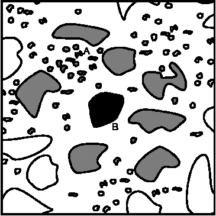
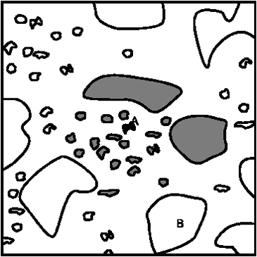
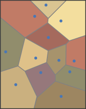
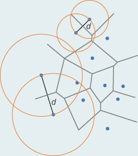
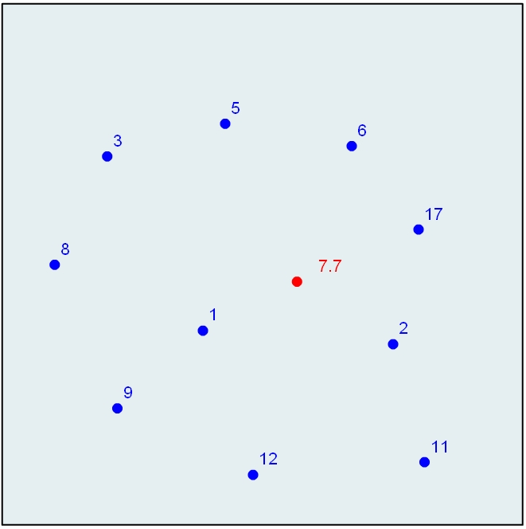

Distanzbeziehugnen: Voronoi Polygone als Ableitung von Entfernung und Nachbarschft
Wir erweitern nun unser Wissen über die Analyse von Distanzen zwischen räumlichen Objekten. Es ist häufig sinnvoll, in einer ersten Analyse ohne räumlich einschränkende Bedingungen zu arbeiten, z.B. dann wenn diese Informationen fehlen. Die Bezeichnung „Nähe“ (Proximität) verweist auf eine gewisse Ungenauigkeit. Als qualitative Begriffe können hierfür verwendet werden: „nah“, „weit“ oder „in der Nachbarschaft von“. Für GI-Systeme müssen diese Begriffe objektiviert und operationalisiert werden. Diesem Maß muss folglich ein Distanzkonzept zugrunde gelegt werden z. B. die euklidische Distanz oder Wegzeiten. In einem zweiten interpretativen Schritt muss anschließend entschieden werden, welche Einheiten diese Art der Nähe definieren. Es gibt im Sinne der Zielsetzung einer Fragestellung nur geeignete und weniger geeignete Maße, nicht aber richtige oder falsche. Daher ist es von zentraler Bedeutung, dass man für die untersuchten Objekte eine sinnvolle Nachbarschaftsbeziehung definiert. In Abbildung 1 ist das Objekt B groß, und seine Nachbarschaft (grau eingefärbt) ist hauptsächlich bestimmt durch benachbarte große Objekte, während Objekt A (Abbildung 2) kleiner ist und sich auf eine andere Nachbarschaft bezieht, hauptsächlich bestimmt durch lokale kleinere Objekte. Es ist ersichtlich, dass A in die lokale Umgebung von B gehört, aber es ist nicht unbedingt der Fall, dass B in die lokale Umgebung von A gehört.

Distanz und Nähe ist kontextabhängig und nicht symmetrisch (Worboys 1996)
Distanz und Nähe ist kontextabhängig und nicht symmetrisch (Worboys 1996)In Analysen der Nähe oder Nachbarschaft geht es häufig um Einflussgebiete oder Einzugsgebiete also um räumliche Wirkungs- oder Prozessmuster. Häufige Fragen in diesem Zusammenhang sind:
- Welche oder wie viele Diskotheken liegen im Umkreis von 300m um einen bestimmten Standort (Outdoorcamp)?
- Wie viele Täler können von einem Aussichtspunkt eingesehen werden?
- Liegt ein bestimmter Standort in der Lärmzone eines Quad-Tracks?
In der Folge werden einige Methoden zur Berechnung von Distanzen zwischen Raumobjekten etwas ausführlicher als bisher erörtert. Wegen der unterschiedlichen Art der Diskretisierung des Raums muss -wie bereits gewohnt- zwischen Vektor- und Rastermodell unterschieden werden.
Voronoi-Polygone
Thiessen-Polygone – auch Voronoi-Polygone oder Voronoi-Diagramme genannt – sind eine wesentliche Methode, um Nähe (Proximität) bzw. Nachbarschaften zu analysieren. Thiessen-Polygone (vgl. Abbildung unten rechts) können verwendet werden, wenn Regionen gesucht sind, die am nächsten zu einem Punkt aus einer Menge von unregelmäßig verteilten Punkten liegen. Ein Thiessen-Polygon definiert im zweidimensionalen Fall eine Fläche um einen Punkt, in der jede Raumstelle näher an diesem Punkt liegt als an irgendeinem anderen Punkt. Solche Konstrukte können auch in höheren Dimensionen gebildet werden, wobei dann Thiessen- oder Voronoi-Polyeder entstehen statt Polygone.
| Unregelmäßig verteilte Punkte oder Stichproben (GITTA 2005) |  Punkte mit den dazugehörenden Thiessen-Polygonen (GITTA 2005) |
Man kann Voronoi-Diagramme auch um Linien bilden, was dann zu komplexeren Formen führt (siehe unten stehende Abbildung). In dieser Unit beschränken wir uns jedoch auf den einfachsten und am häufigsten verwendeten Fall von Thiessen-Polygonen für Punkte. Eine weiterführende Diskussion bietet (Boots 1999).
Thiessen-Polygone
Da Thiessen-Polygone einem in der Natur (z. B. Pflanzenzellen) und in den Raumwissenschaften häufig beobachteten Organisationsprinzip (z.B. zentralle Orte nach Christaller) entsprechen, sind die Anwendungsmöglichkeiten mannigfaltig. Zum Beispiel können Thiessen-Polygone in erster Näherung verwendet werden, um aus unregelmäßig und isoliert erhobenen Bodenproben Bodenkarten zu erstellen. Dabei muß die Annahme getroffen werden, dass nichts weiter über den Raum zwischen den beprobten Orten bekannt ist und die Grenzlinie zwischen zwei Stichproben mit unterschiedlichem Bodentyp willkürlich auf halben Weg zwischen ihnen liegt (Beispiel aus (Jones 1997, S. 48). Die Thiessen-Polygone können auch verwendet werden, um Einzugsgebiete von Geschäften oder Dienstleistungseinrichtungen abzugrenzen, wenn keine weiteren Informationen zur Verfügung stehen.
Wie werden Thiessen-Polygone konstruiert?Da Thiessen-Polygone jeweils alle Raumstellen enthalten, die näher beim dazugehörigen Zentrum liegen als bei irgendeinem anderen Zentrum, bildet jede Kante eines Thiessen-Polygons jeweils die Isolinie der Entfenungen zu allen benachbarten Zentren. Weil dem so ist, können die Kanten von Thiessen-Polygonen als Mittelsenkrechte auf die Verbindungslinie d zwischen jeweils zwei Zentren gebildet werden. Mittelsenkrechte konstruiert man durch Schneiden zweier Kreise mit Radius d um die betroffenen Paare von Zentren, wie dies die Abbildung unten zeigt. Die Schnittpunkte der verschiedenen Mittelsenkrechten bilden die Eckpunkte eines Thiessen-Polygons. |
 Konstruktion von Thiessen-Polygonen (Anonym) |
Thiessen-Polygonen im RasterDie Ermittlung von Thiessen-Polygonen im Raster ist übrigens auch möglich. Im Raster kann zwar nicht mehr von Polygonen gesprochen werden, doch ist die Berechnung von Proximitätszonen sehr einfach zu bewerkstelligen. Von einer Anzahl von Punkten aus, gegeben als einzelne Zellen in einem Raster, kann ganz einfach eine Distanztransformation berechnet werden. Die Berechnung im Raster hat den Vorteil, dass auch sehr einfach nicht euklidische Metriken, Gewichtungsfaktoren usw. eingeführt werden können. |
Thiessen-Polygone in einem Raster mit kleiner Auflösung (GITTA 2005) |
Bearbeiten Sie...
Konstruktion von Thiessen-Polygonen
Konstruieren Sie auf der folgenden Grafik aus den gegebenen Punkten auf einem Papier (ausdrucken) die dazugehörenden Thiessen-Polygone. Was für eine Metrik ist der Konstruktion unterlegt?

(GITTA 2005)